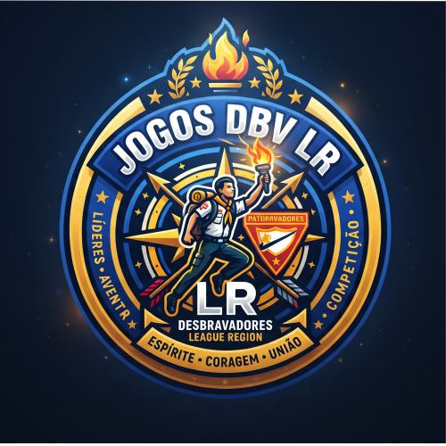

Selecione a Classe
Escolha o cartão de classe:
Ferramentas:
Trilha Física e Prática

Trilha Dividida: Físico & Espiritual
Autor do Projeto: Líder Luiz Eduardo (CPF: 56128690297)
Escolha o cartão de classe: